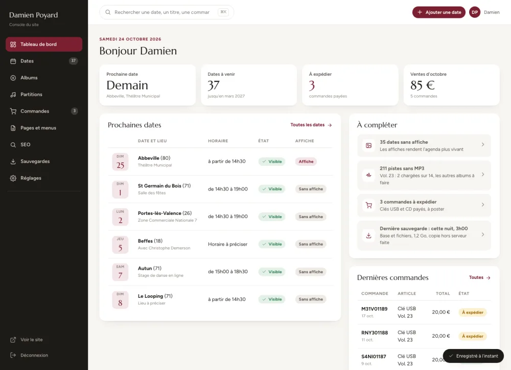
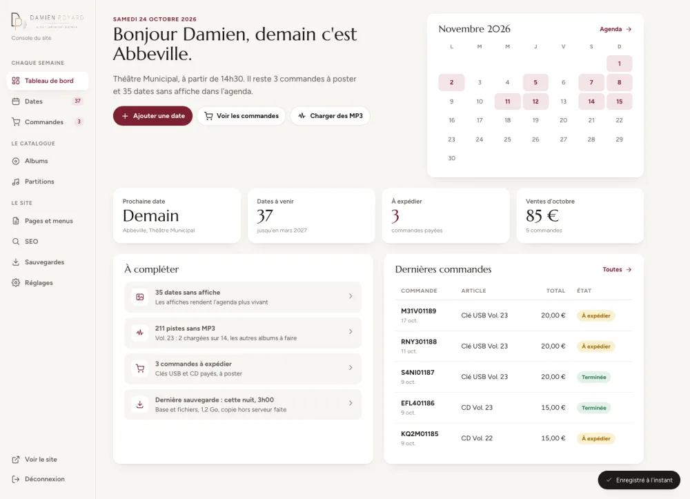
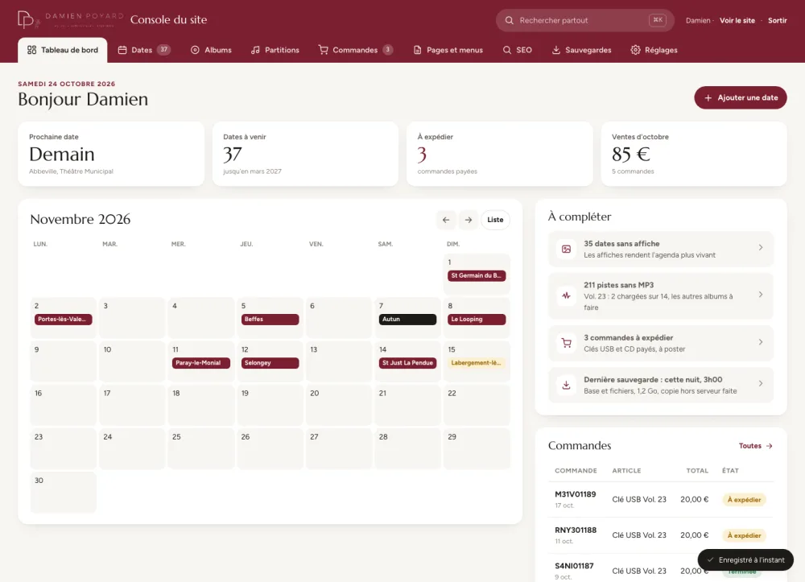

1

Pupitre
Barre latérale sombre, tableaux denses, fiche sur une page entière avec sommaire.
Ouvrir la console 1Même contenu, mêmes données réelles (dates de novembre, Vol. 23, dernières commandes), trois façons de s'organiser. Chaque console montre le tableau de bord, les dates et un album. Le reste (partitions, commandes, pages et menus, SEO, sauvegardes) reprendra la composition choisie.

Barre latérale sombre, tableaux denses, fiche sur une page entière avec sommaire.
Ouvrir la console 1
Navigation claire, cartes groupées par mois, la fiche s'ouvre en panneau sur le côté.
Ouvrir la console 2
Bandeau bordeaux à onglets, liste et fiche côte à côte, calendrier au centre du tableau de bord.
Ouvrir la console 3